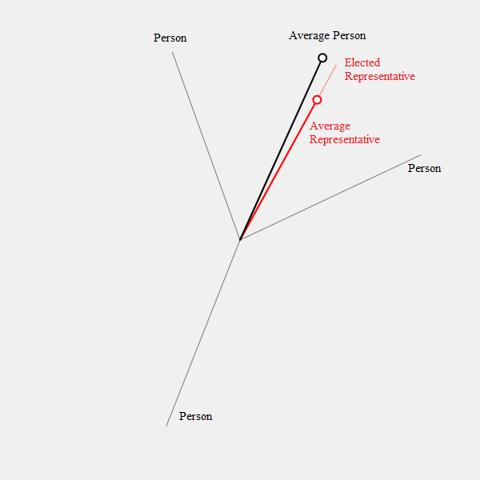

How do we (s)elect our representatives?
Let us assume a very simplified proposition as our basis for our model.
"While electing their representatives, people always choose the candidate which is most aligned to their views"
Now consider the example shown above. The work "alignment" in our proposition lets us think about people as vectors. The magnitude is not important, just the direction.
In the ebove example, for 3 people(voters), we have two candidates to be elected. Now let's have elections, based on our proposition, where people vote for the candidate who is the most aligned to their views i.e. who has the smallest angle with them. This is how the voting process would go ..
| Candidate A | Candidate B | |
| Person A | 1 | 0 |
| Person B | 1 | 0 |
| Person C | 0 | 1 |
| Total Votes | 2 | 1 |
As Candidate A got the highest number of votes, they are elected as the people's representative. Now let us think about the the views of the population as a whole and the views of the elected representives as a whole.
Let the dark black line represent the average direction of the entire voter population and the dark red line represent the average direction of the elected representatives. In our example, we have only one representative, so it's in the same direction.
Remember, we are using the direction of a vector as a metaphor for people's political, social, moral views and the angle between two vectors as a measure of how aligned they are...
Here we observe that the average representative is closely aligned to the average person. This is a good thing. This close alignment shows us that the decisions the representatives would take would be suitable to the most number people they represent. That's what makes the representation a true representation in the sense of the word.
Now let's see what happens when we model a bit more voters and successive elections among representatives to choose higher order representatives
What we want to find out is how different are the n-th layer of elected representatives (Avg #n) different that the initial population(Avg 0)..
We are staring out with these parameters :
The first time you conduct the elections, layer 0, you have a lot more people voting for a relatively low number of candidates.
In each successive election, the elected candidates vote among themselves, to select the next layer of representatives...
You can keep on conducting elections until you are finally left with only one person. Then, in most cases, you will realize that the final one person that represents us all, in in fact not really similar in views to the average voter of the 0th generation.